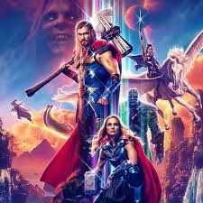
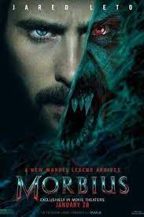

Thor embarks on a journey unlike anything he's ever faced.However,his retirement gets interrupted by Gorr the God Butcher, who seeks the extinction of the gods
Release date: July 6, 2022 (Australia) Trending
Director: Taika Waititi
Distributed by: Walt Disney Studios Motion Pictures
Music by: Michael Giacchino; Nami Melumad
Written by: Taika Waititi; Jennifer Kaytin Robinson
Based on: Marvel Comics

Dangerously ill with a rare blood disorder and determined to save others from the same fate, Dr. Morbius attempts a desperate gamble. While at first it seems to be a radical success, a darkness inside of him is soon unleashed.
Release date: April 1, 2022 (USA)
Director: Daniel Espinosa
Distributed by: Sony Pictures Releasing
Box office: $163.9 million
Music by: Jon Ekstrand
Written by: : Matt Sazama; Burk Sharpless;
Nearly 5,000 years after he was bestowed with the almighty powers of the Egyptian gods -- and imprisoned just as quickly -- Black Adam is freed from his earthly tomb, ready to unleash his unique form of justice on the modern world.
Release date: October 21, 2022 (USA)
Director: Jaume Collet-Serra
Distributed by: Warner Bros. Pictures
Produced by: Beau Flynn; Dwayne Johnson; Hiram Garcia; Dany Garcia
Production companies: New Line Cinema; DC Films; Seven Bucks Productions; FlynnPictureCo.
Written by: Adam Sztykiel; Rory Haines; Sohrab Noshirvani
 Prince Amleth is on the verge of becoming a man when his father is brutally murdered by his uncle, who kidnaps the boy's mother. Two decades later, Amleth is now a Viking who raids Slavic villages. He soon meets a seeress who reminds him of his vow -- save his mother, kill his uncle, avenge his father.
Release date: April 22, 2022 (USA)
Director: Robert Eggers
Adapted from: Amleth
Box office: $68.9 million
Music by: Robin Carolan; Sebastian Gainsborough
Distributed by: Universal Pictures, Focus Features
Prince Amleth is on the verge of becoming a man when his father is brutally murdered by his uncle, who kidnaps the boy's mother. Two decades later, Amleth is now a Viking who raids Slavic villages. He soon meets a seeress who reminds him of his vow -- save his mother, kill his uncle, avenge his father.
Release date: April 22, 2022 (USA)
Director: Robert Eggers
Adapted from: Amleth
Box office: $68.9 million
Music by: Robin Carolan; Sebastian Gainsborough
Distributed by: Universal Pictures, Focus Features